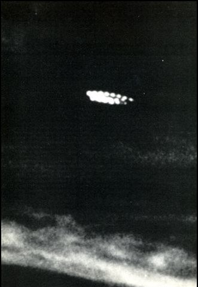

Le n° de Fate de ce mois-ci, titrant : Un ovni se saisit d'une voiture
Durant et jusqu'au entre A Vrigne-au-Bois (Ardennes),
1 témoin et sa femme observent dans le ciel des points lumineux visibles par temps clair. Ils sont de couleur rouge,
vert et blanche et clignotent. L'ensemble de ces points forme une boule. Les gendarmes lors de différents services
de nuit ne verront aucun fait similaire GEPAN: PAN classé
C.
A Louhans (Saône-et-Loire), plusieurs personnes observent dans
le ciel un phénomène lumineux semblant à faible altitude. Il se déplace en faisant un bruit impressionnant ce qui
effraye certains témoins et des animaux Selon le GEPAN, ces personnes ont probablement été témoin du passage d'un aéronef ce que confirme 1 des témoin qui reconnaitra les feux arrières d'un hélicoptèreGEPAN: PAN
classé B.
A Troyes (Aube), 1 témoin observe dans le ciel un phénomène de
la forme d'un dirigeable se déplaçant à vitesse constante sur une trajectoire horizontale en direction du
nord-ouest. Aucun bruit provenant de l'objet n'est entendu durant toute l'observation. Le phénomène disparaît
progressivement dans le ciel GEPAN: PAN classé
C.
A Lanxi (Zhejiang, Chine), le routier Wang Jian Min rencontre une
voiture en stationnement. Son conducteur affirme avoir vu un ovni atterrir sur la route devant lui. Il est trop
perturbé pour oser s'en approcher. Wang redémarre, suivi par la voiture et son conducteur, et ils arrivent devant un
ovni à coupole, arrêté au sommet d'une colline. A côté de l'étrange engin se trouvent 2 êtres vêtus de tenues
argentées et portant un casque sur lequel est fixée une lampe. Wang saute à bas de son camion, se munit d'une pince
à levier et s'approche des créatures. Comme il arrive près d'eux, l'ovni et les créatures disparaissent.

La photo inexpliquée de Motonau (Nouvelle Zélande) le 27. Un reflet sur vitre ?
Plusieurs personnes des Vosges (Lorraine) et du Haut Rhin (Alsace)
observent dans le ciel un phénomène lumineux clignotant irrégulièrement. De forme sphérique, il semble se déplacer
en ziz-zag sans qu'aucun bruit n'est remarqué. 1 an auparavant un phénomène similaire avait été constaté par des
témoins GEPAN: PAN classé C.
A Thivars (Eure-et-Loir), des automobilistes aperçoivent
au-dessus d'un boi s 1 phénomène rouge phosphorescent, de grande taille et en forme de bol. Aucun bruit particulier
n'est entendu. Ce phénomène s'élève très rapidement dans le airs. Il apparaîîs de forme rectangulaire puis sous
la forme d'un simple trait avant de disparaître complètement GEPAN: PAN classé
D.
A Motonau (Nouvelle Zélande), une série de photos est prise sans que rien d'anormal ne soit vu
ni entendu. A leur développement, on découvre parmi elles un cliché montrant un phénomène non identifié. 2 anciens
analystes photo de l'Air Force, incapable de conclure, le qualifieront d'impénétrableBrookesmith, P.: The
Complete Sightings, 1995.